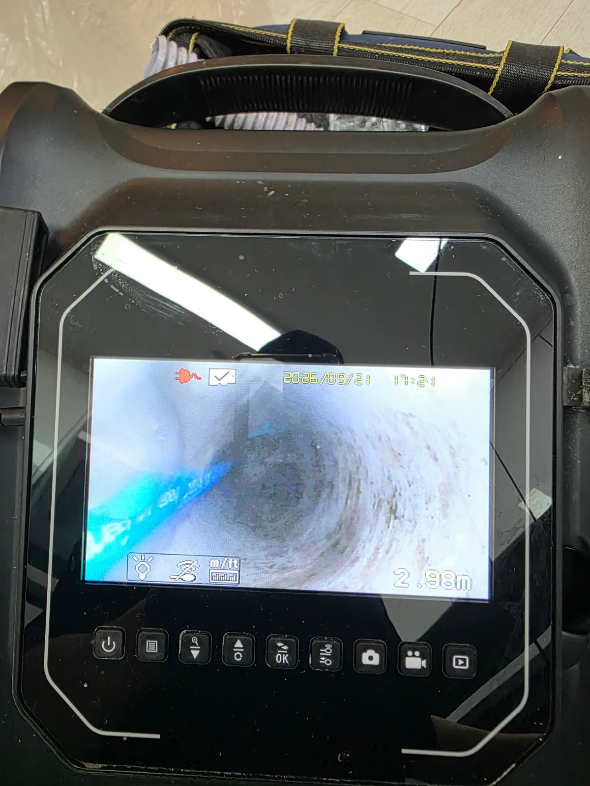

강남구 압구정동 싱크대막힘, 현장 도착 후 진단
싱크대 배수가 제대로 되지 않는다는 요청을 받고 강남구 압구정동 고급빌라 현장으로 신속하게 출동했습니다.
싱크대막힘 현장에서는 배관 내시경으로 내부부터 살펴보는 경우가 많지만 이번에는 순서가 조금 달랐습니다.
입구부부터 이물질이 쌓여 있어 처음부터 내시경 카메라를 원활하게 진입시키기 어려운 상태였습니다. 카메라가 지나갈 공간조차 충분하지 않은데 무리하게 안쪽으로 밀어 넣는다고 정확한 진단이 되는 것은 아닙니다.
그래서 이번 현장은 내시경보다 석션이 먼저였습니다.
회수할 수 있는 이물질부터 밖으로 빼내고 내시경이 들어갈 수 있는 공간을 확보한 다음, 그제야 보이지 않던 배관 안쪽을 확인하기로 했습니다.
1단계: 증상 확인과 필요한 장비 작업
석션 장비를 이용해 배관 입구부에 쌓여 있던 이물질부터 흡입했습니다.
막힘 작업은 어떤 장비가 더 강한지를 겨루는 일이 아닙니다. 현재 배관 상태를 보고 어떤 장비를 먼저 사용해야 하는지 판단하는 과정이 중요합니다.
입구부의 이물질을 석션으로 제거하면서 조금씩 공간이 생기기 시작했고, 그제야 배관 내시경을 안쪽으로 진입시킬 수 있었습니다.
카메라를 조금씩 전진시키자 처음에는 보이지 않았던 배관 내부가 모습을 드러냈습니다.
그리고 화면에 나타난 상태는 생각보다 좋지 않았습니다.
내시경 화면에는 배관 벽면을 따라 오염물이 두껍게 붙어 있었고, 물이 지나가야 할 내부 공간도 상당히 좁아져 있었습니다. 싱크대 물이 원활하게 빠지지 않았던 이유를 눈으로 확인할 수 있는 순간이었습니다.

2단계: 원인 구간 처리와 정상 작동 확인
원인이 확인됐으니 이제 좁아진 배수 통로를 제대로 정리할 차례입니다.
배관 내시경으로 확인한 구간을 기준으로 샤프트 장비를 투입했습니다. 샤프트를 회전시키며 배관 벽면과 내부에 남아 있던 오염물을 정리하고 물이 지나갈 수 있는 통수 공간을 다시 확보했습니다.
이번 작업의 핵심은 단순히 막힌 지점을 한 번 뚫는 것이 아니었습니다.
입구부의 이물질은 석션으로 회수하고, 그제야 내시경으로 배관 내부를 진단한 뒤, 확인된 오염 구간은 샤프트로 정리했습니다.
하나의 장비만 고집하지 않고 배관 상태가 변하는 과정에 맞춰 작업 방법도 단계적으로 바꿨습니다.
마지막에는 싱크대에서 충분한 물을 흘려보냈습니다. 막힘 없이 물이 정상적으로 배수되는 것을 확인한 뒤 압구정동 싱크대막힘 작업을 마무리했습니다.

작업 결과와 재발 방지 안내
이번 강남구 압구정동 현장은 입구부부터 막힘이 심해 석션으로 먼저 작업 공간을 확보한 뒤 배관 내시경 진단과 샤프트 작업까지 단계적으로 진행한 고급빌라 싱크대막힘 사례입니다. 작업 후에는 싱크대 물이 정상적으로 배수되는 것을 최종 확인했습니다.
싱크대막힘은 겉으로 보이는 증상이 비슷해도 실제 배관 상태는 현장마다 다릅니다. 석션만으로 해결되는 경우가 있는 반면, 이번 현장처럼 내부 오염 상태를 확인하고 추가적인 샤프트 작업이 필요한 경우도 있습니다.
평소 싱크대 물이 예전보다 천천히 내려가거나 꿀렁거리는 소리가 반복된다면 배관 내부의 통수 공간이 좁아지고 있다는 신호일 수 있습니다. 음식물 찌꺼기와 기름 성분의 유입을 줄이고, 증상이 반복된다면 완전히 막혀 역류하기 전에 배관 상태를 점검하는 것이 좋습니다.
신라건축설비는 싱크대막힘을 단순히 물길 하나 뚫는 작업으로 끝내지 않습니다. 현장 상태에 따라 석션, 배관 내시경, 관통, 샤프트 등 필요한 장비와 작업 순서를 결정합니다. 강남구 압구정동을 비롯한 서울·경기권의 싱크대막힘·변기막힘·하수구막힘부터 공용배관과 오수관 문제까지 현장 상황에 맞춰 대응하고 있습니다.
최종 조치: 석션으로 배관 입구부의 이물질을 먼저 흡입해 작업 공간을 확보했습니다. 이후 배관 내시경으로 내부 상태를 진단하고 샤프트를 투입해 배관 벽면과 내부에 남아 있던 오염물을 정리했습니다. 작업 후 물을 흘려보내 정상적인 통수 상태까지 확인했습니다.
현장 방문 전 확인하는 비용과 작업 범위
신라건축설비는 현장 증상과 배관 구조를 확인한 뒤 필요한 작업과 예상 비용을 안내합니다. 단순 관통으로 해결되는지, 배관내시경·석션·고압세척 또는 추가 장비가 필요한지는 현장 상태에 따라 달라집니다. 출장비와 야간 작업비, 추가 장비 비용이 발생할 수 있는 경우 작업 전에 먼저 설명하고 동의를 받은 범위에서 진행합니다.
업체를 선택할 때 확인할 사항
무조건적인 ‘0원’ 표현보다 실제 작업 범위, 추가 비용 조건, 사용 장비와 사후 대응 기준을 확인하는 것이 중요합니다. 해결되지 않았을 때의 비용 기준과 작업 후 동일 증상 발생 시 점검 범위를 사전에 문의해두면 불필요한 분쟁을 줄일 수 있습니다.
강남구 싱크대막힘 자주 묻는 질문
싱크대막힘은 왜 반복되나요?
강남구 압구정동 현장처럼 싱크대 물이 원활하게 빠지지 않는 막힘 증상이 발생했습니다. 배관 입구부부터 이물질이 쌓여 있어 내시경으로 내부를 제대로 확인하기 전에 먼저 입구부를 정리해야 하는 상태였습니다. 증상은 원인이 현장마다 다를 수 있습니다. 주방 배수관 내부에 기름때·슬러지·음식물 찌꺼기가 누적되거나 배관 구배와 긴 횡주관 때문에 반복될 수 있습니다. 단순 관통 후 다시 막힌다면 배수관 내부 상태를 확인하는 것이 좋습니다.
싱크대 물이 안 내려가거나 역류하면 싱크대뚫는업체를 불러야 하나요?
물이 천천히 빠지거나 싱크대역류가 반복되면 배수구 입구보다 안쪽 주방 배관에 막힘이 있을 수 있습니다. 현장에서는 배수 상태와 막힌 구간을 확인한 뒤 작업 방법을 정합니다.
싱크대 기름때 막힘은 약품으로 해결되나요?
가벼운 오염은 일시적으로 나아질 수 있지만 굳은 기름 슬러지와 배관 내부 스케일은 약품만으로 충분히 제거되지 않는 경우가 있습니다. 반복 막힘은 장비를 이용한 배관 청소가 필요할 수 있습니다.
싱크대뚫는업체는 어떤 장비로 작업하나요?
막힘 위치와 배관 상태에 따라 석션, 샤프트, 배관내시경, 배관 스케일링 장비 등을 사용합니다. 필요한 장비는 현장 진단 후 결정합니다.
싱크대막힘 비용은 어떻게 정해지나요?
막힘 구간의 길이와 오염 정도, 석션·샤프트·내시경 등 장비 투입 범위에 따라 달라질 수 있습니다. 작업 전 예상 범위와 추가 비용 조건을 먼저 안내합니다.
싱크대 악취도 배수관 막힘과 관련 있나요?
기름 슬러지와 음식물 오염이 배수관 내부에 쌓이면 배수 불량과 함께 악취가 나타날 수 있습니다. 다만 트랩이나 연결부 문제도 있어 현장 상태를 함께 확인해야 합니다.
싱크대막힘 서울·경기 출동지역
신라건축설비는 강남구 압구정동 현장을 포함해 서울 25개 구와 경기도 31개 시·군의 배관 문제를 상담합니다. 현장 거리와 기사 배정 상황에 따라 출동 가능 여부를 먼저 안내드립니다.
서울 전 지역
강남구 · 강동구 · 강북구 · 강서구 · 관악구 · 광진구 · 구로구 · 금천구 · 노원구 · 도봉구 · 동대문구 · 동작구 · 마포구 · 서대문구 · 서초구 · 성동구 · 성북구 · 송파구 · 양천구 · 영등포구 · 용산구 · 은평구 · 종로구 · 중구 · 중랑구
경기도 주요 출동지역
수원시 · 용인시 · 고양시 · 화성시 · 성남시 · 부천시 · 남양주시 · 안산시 · 평택시 · 안양시 · 시흥시 · 파주시 · 김포시 · 의정부시 · 광주시 · 하남시 · 광명시 · 군포시 · 양주시 · 오산시 · 이천시 · 안성시 · 구리시 · 의왕시 · 포천시 · 양평군 · 여주시 · 동두천시 · 과천시 · 가평군 · 연천군